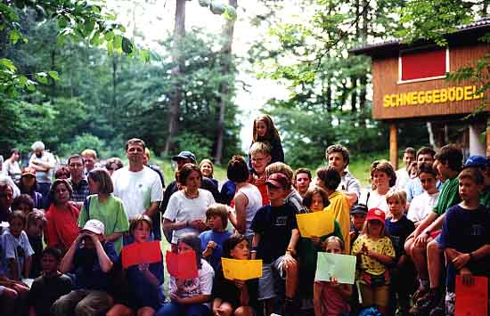
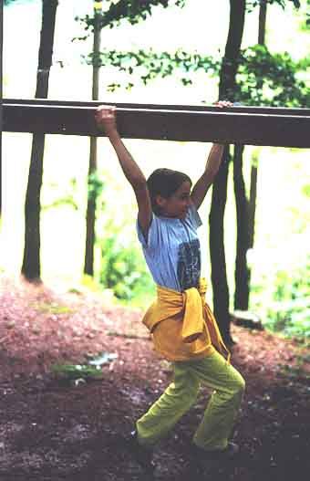
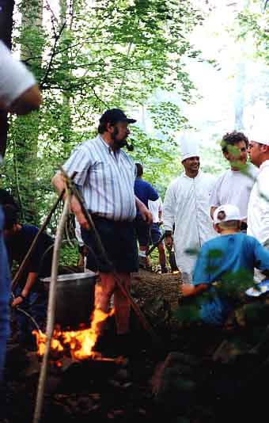
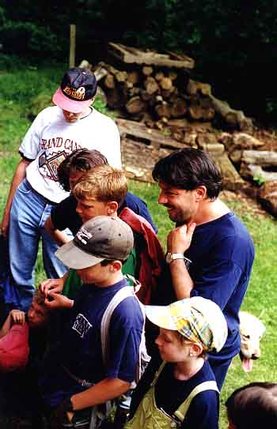
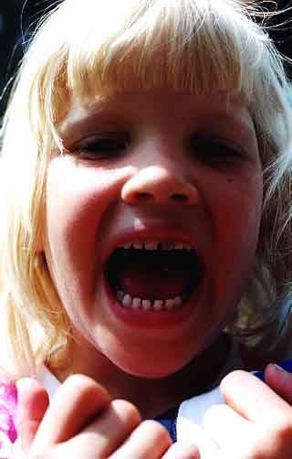

Abteilungsanlass der Pfadiabteilung Alvier Buchs
Um den Eltern zu zeigen, was ihre Sprösslinge jeden Samstagnachmittag im Wald so treiben und um den Kontakt zu knüpfen oder zu verstärken, lädt die Pfadiabteilung Alvier jedes Jahr alle ihre Mitglieder

mitsamt ihren Eltern, Geschwistern und sonstigen Verwandten und Bekannten zu einem Grossanlass ein. Dieses Jahr wurde dieser an einem Samstagnachmittag von der Roverrotte Hööpüntel organisiert und stand unter dem verheissungsvollen Motto "Menu surprise".
Über 130 Pfadis und Pfadiangehörige trafen sich beim Pfadiheim Schneggenbödeli und nahmen an einem interessanten und anstrengenden Spiel teil. In Gruppen mussten sie an verschiedenen Posten durch lösen von Aufgaben und anwenden all ihres Geschicks Spielgeld (sogenanntes Höö) verdienen. Mit diesem sauer verdienten Batzen konnten sie darauf Esswaren, Werkzeug zum Bau einer Feuerstelle und Kochgeschirr erstehen. Auf gings ans harte Arbeiten, der Hunger trieb alle zu Höchstleistungen an, und siehe da - innert kurzer Zeit entstanden zehn schöne und teilweise auch sehr interessante und innovative Kochstellen, auf welchen Risotto nach zehn verschiedenen Rezepten vor sich hin brodelte. Wie zu hoffen war, bekam dieser Znacht allen, und so wurde schliesslich das grosse Lagerfeuer entzündet. Insbrünstig wurden Lieder gesungen, und zwischendurch wurden die elfjährigen Pfadis, welche an Pfingsten von der Wolfs- und Bienlistufe (den jüngsten Pfadis) in die Pfadistufe übergetreten waren, traditionsgemäss und mit viel Applaus über die meterhoch zum Himmel greifenden Flammen des Lagerfeuers geworfen. Durch ein gemütliches Beisammensein mit offenem Ende wurde der Abend beschlossen oder eben auch nicht.
